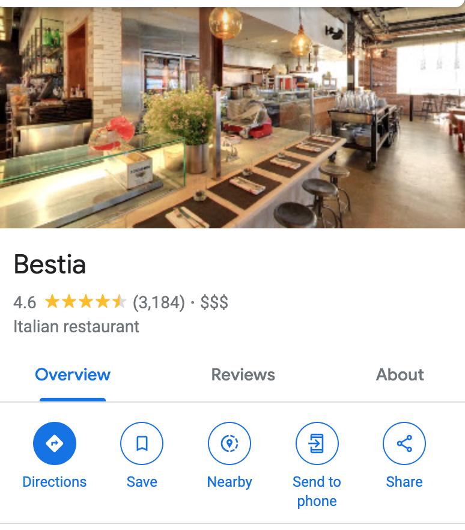
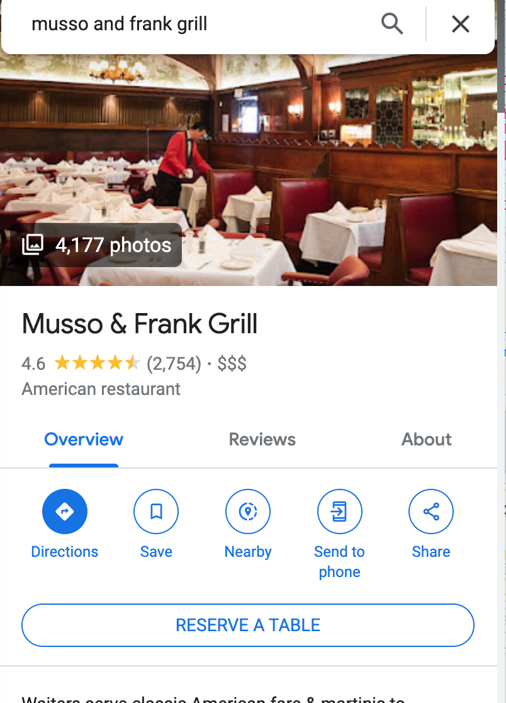
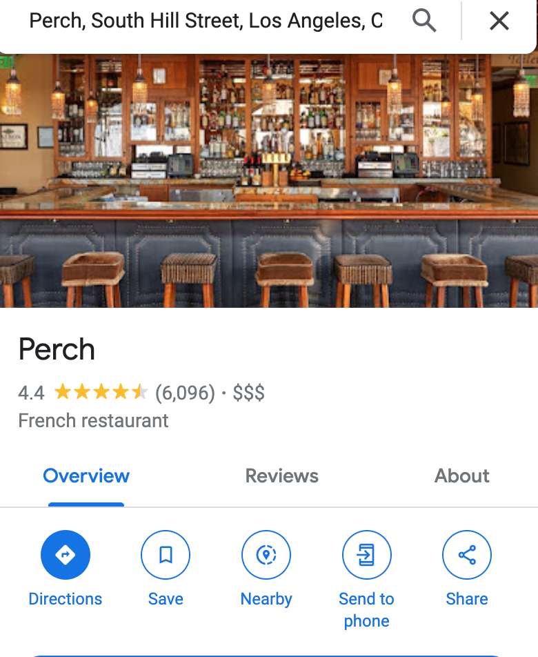

Welcome to the City of Angels, a mesmerizing metropolis that effortlessly captures the hearts of millions. Los Angeles,
or LA as it is affectionately known, is a kaleidoscope of diverse cultures, breathtaking landscapes, and an unwavering
spirit of creativity. Nestled along the stunning Pacific coastline in Southern California, this sprawling urban expanse
is a melting pot of dreams, where ambition and imagination intertwine to create an atmosphere unlike any other.
Best Restaurant's in LA



The concept for Bestia juxtaposes decorative contemporary elements against a raw, industrial space dripping with
character. This approach pays homage to sophisticated modern-day Italian spaces, which often integrate contemporary
interiors into centuries-old structures. Strong, traditional building materials such as tile, steel, marble, and wood
also provide pops of festive color. The name Bestia (Italian for “Beast”) echoes throughout the space via hard-edged
design elements, such as the wall covering’s pattern of bar-fight weapons, intimidating meat-hook chandeliers suspended
from soaring steel tracks, and bathroom tile work that reads as unfinished.
Musso & Frank's reputation was sealed during the Golden Age of Hollywood. Over the years, they've served Hollywood
royalty and literary titans, everyone from Marilyn Monroe and Humphrey Bogart to F. Scott Fitzgerald and Charles
Bukowski.
With every detail in place, Mrs. Fish welcomes diners and drinkers, locals and tourists alike, to experience modern
Japanese cuisine and a robust whisky program in a stunningly designed, art-filled DTLA oasis.
Located 15 floors below Perch (same ownership), Mrs. Fish combines food, art from the hottest galleries in Tokyo, and
drink to create an unparalleled dining and drinking experience.